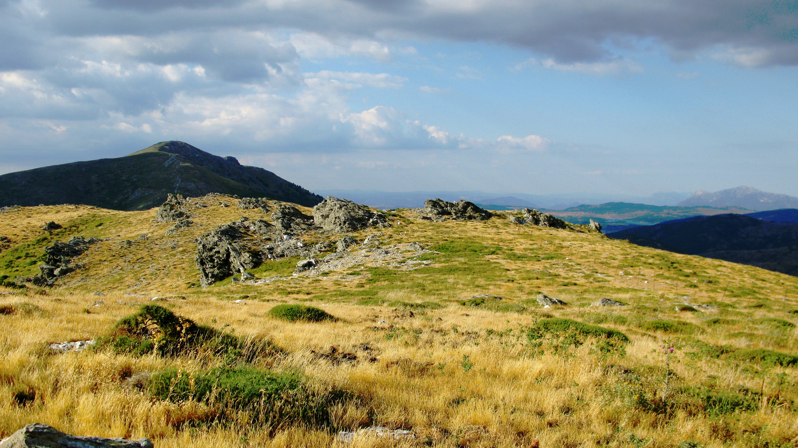
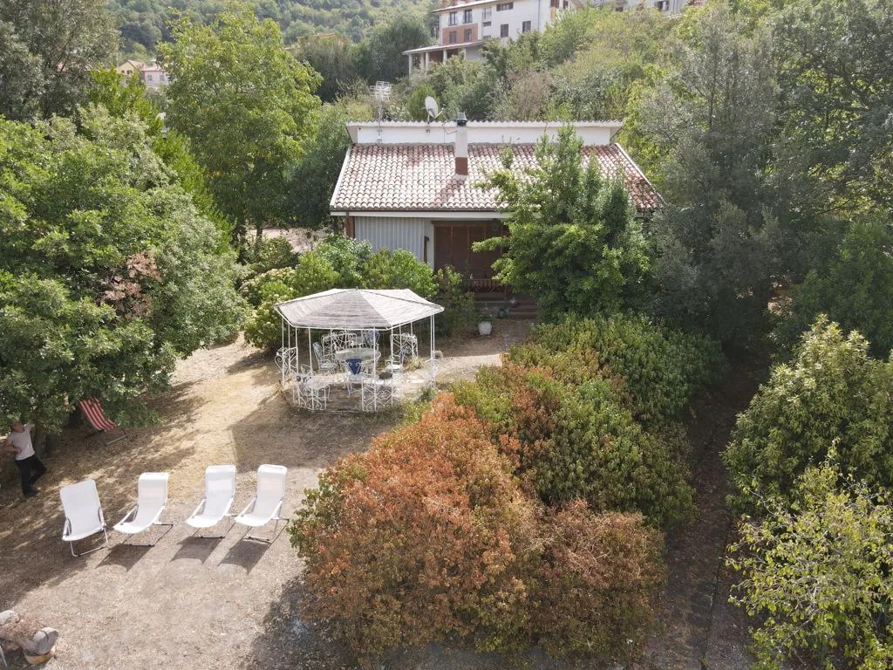
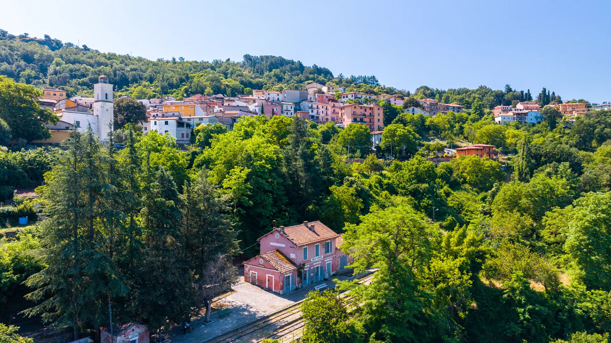
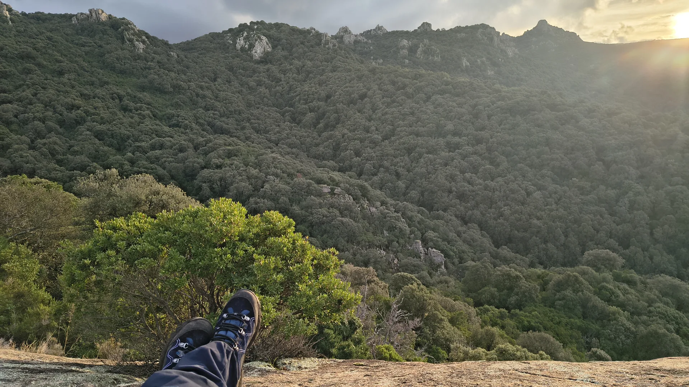
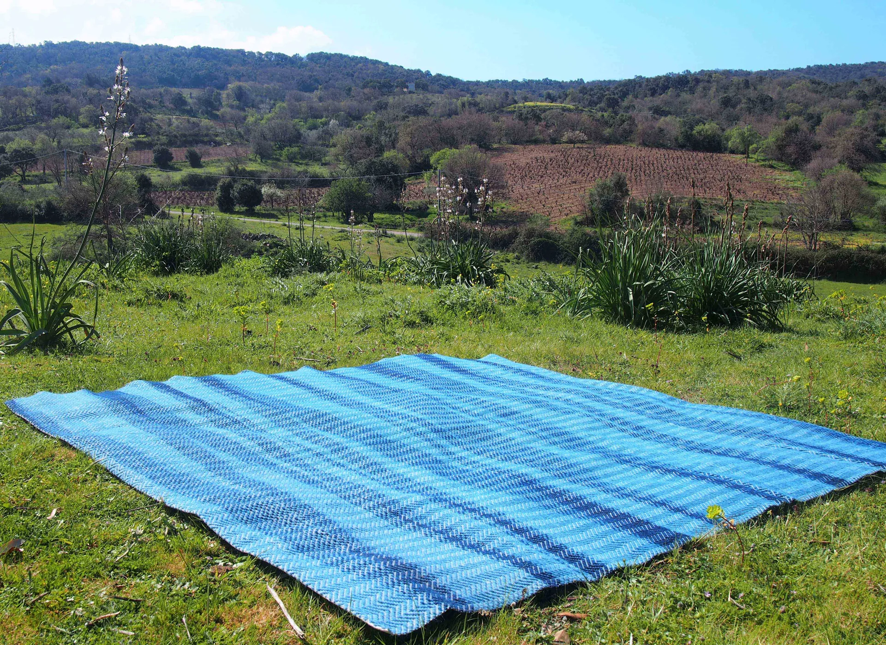
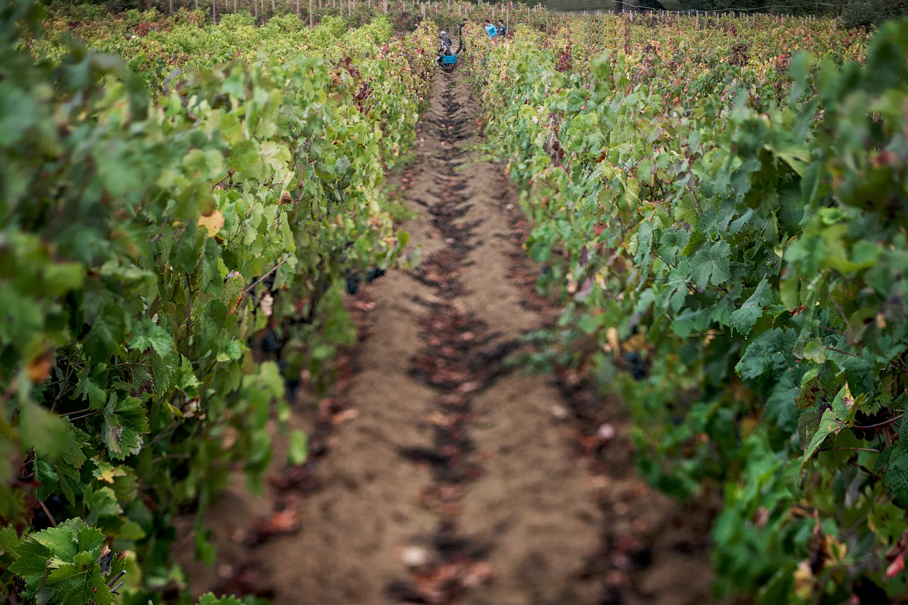
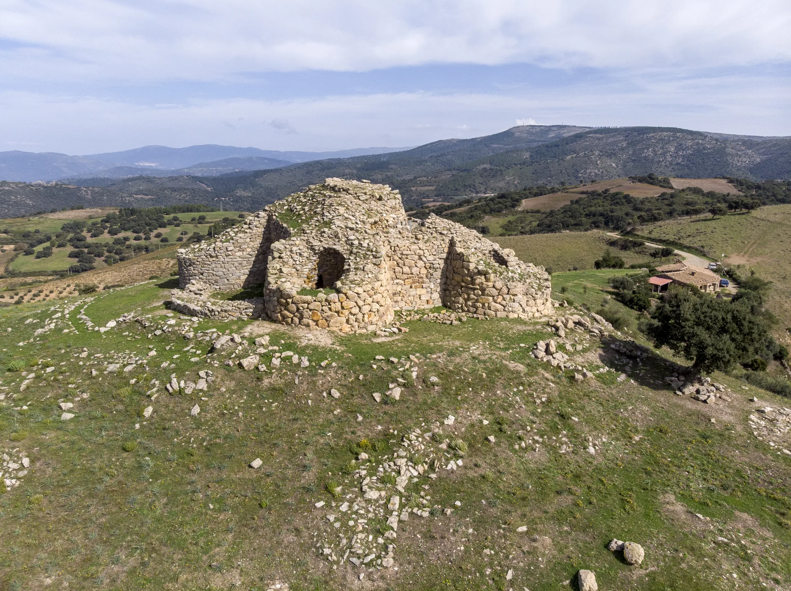
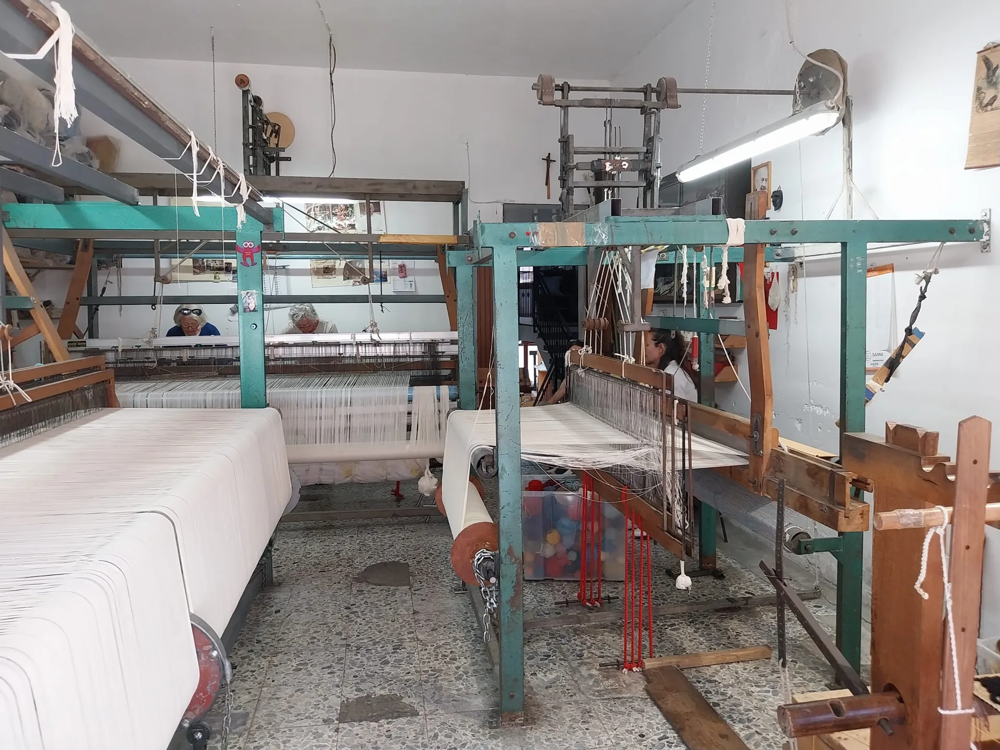
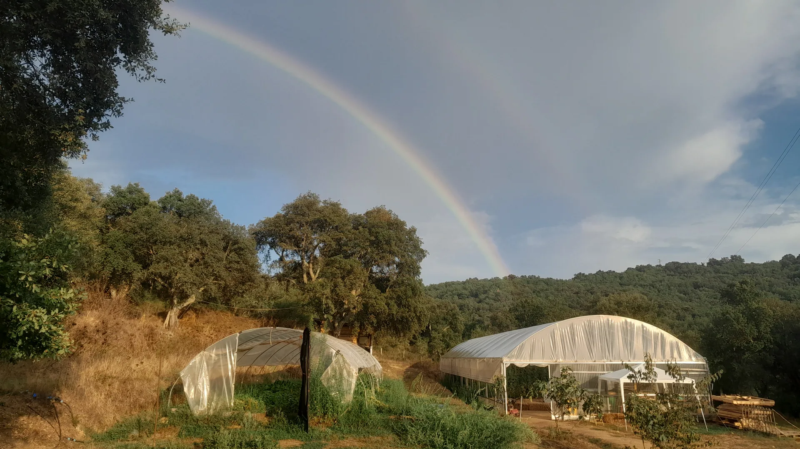

Destinazioni
Esplora esperienze
nella Barbagia.
Borghi, sentieri, soggiorni e attività nell’interno della Sardegna. Filtra per paese o per tipo di esperienza e trova il percorso più adatto a te.
Filtra
Trova l’esperienza giusta
Per esperienza o paese, senza scorrere tutto.

Ecomuseo Alto Flumendosa
Visite guidate, eventi e percorsi tematici tra acqua, geologia, paesaggi e tradizioni.
Barbagia Express
Transfer, Trenino Verde e viaggi tailor made per scoprire l'interno della Sardegna.
Escursioni Ovodda
Escursioni per tutti, anche inclusive, con percorsi da poche ore a piu giorni.
Educare Insieme
Visite guidate, trekking urbano, degustazioni e laboratori legati al territorio.
Fulghesu Le Vigne
Visita ai vigneti e alla cantina con degustazione guidata di vini e abbinamenti.

Casu Mandrolisai
Visita aziendale, laboratorio e degustazione tra pascoli, caseificio e vino.

Flore de Logu
Accoglienza e degustazione di prodotti tipici con racconto del territorio e della famiglia.
Sa Burra Locanda
Una base accogliente per vivere Gadoni e il territorio con un ritmo piu lento e autentico.
Barbagia Ospitale
Un modo di soggiornare che mette al centro il paese, le relazioni locali e il tempo del viaggio.

ASD BelviTrail
Cammini, trail e attivita all'aperto pensati per scoprire il territorio in movimento.
Agitoriu APS
Progetti, incontri e attivita che valorizzano il territorio attraverso pratiche culturali condivise.


Cantina Sassu
Un'esperienza dedicata al vino e al racconto del territorio, tra cantina, calici e paesaggio.
Caseificio Artigianale E Fattoria Didattica
Un'esperienza tra animali, lavorazione artigianale e racconto concreto della vita in azienda.
Barbagia Slow Tour
Itinerari lenti tra paesi, paesaggi interni e incontri costruiti attorno al territorio.
Esulesos
Un percorso che intreccia identita locale, racconto e radici culturali nel cuore dell'interno.


ASD Uccile
Attivita e percorsi all'aperto legati al movimento, al paesaggio e alla scoperta del territorio.

Interventi Assistiti Con Gli Animali
Un'attivita che mette al centro relazione, benessere e contatto con gli animali in modo guidato.
Museo Di Teti E Gualchiera Di Tiana
Un percorso tra patrimonio materiale, memoria locale e luoghi che raccontano il lavoro e la vita del territorio.
Quarantesimo Parallelo
Un progetto che intreccia linguaggi culturali, territorio e nuove modalita di racconto dell'interno.
Nessun risultato per questo filtro
Prova a cambiare paese o esperienza, oppure torna su “Tutti” per vedere di nuovo tutte le proposte.